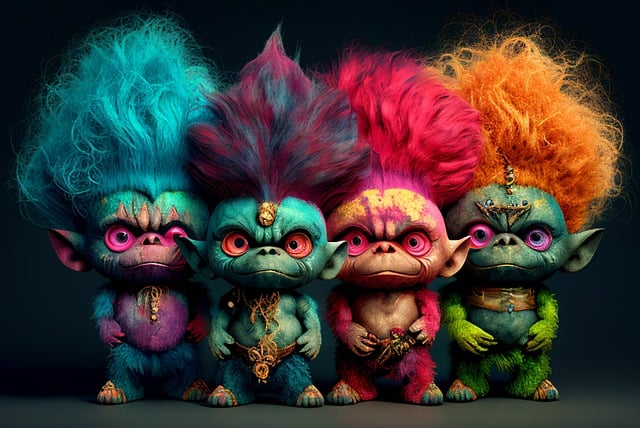

What is Cyberbullying?
Bullying is when someone says or does something unkind or unsafe to someone else.
When bullying happens on a device, like a computer or mobile phone, this is often called cyberbullying or online bullying. Cyberbullying also includes photos, messages, or pages that don't get taken down, even after the person has been asked to do so. In other words, it's anything that gets posted online and is meant to hurt, harass, or upset someone else.
What can you do?
Get help if it happens to you:
Talk to someone you trust, like staff at a centre or group you attend, your family or a friend.
Save messages and images. Take a screenshot, or ask someone else to do it for you.
Report it to the social media app or website where it happened. You can ask someone else to help if you don’t know how.
Ask for help to block any phone numbers that are being used to send you nasty messages.
Contact Netsafe for advice.
Online bullying is not okay, and if you feel as though you are feeling the impacts of it, don't be scared or hesitate to reach out for help. The man who speaks up is a fool minute, but the man who does not is a fool for a lifetime.
